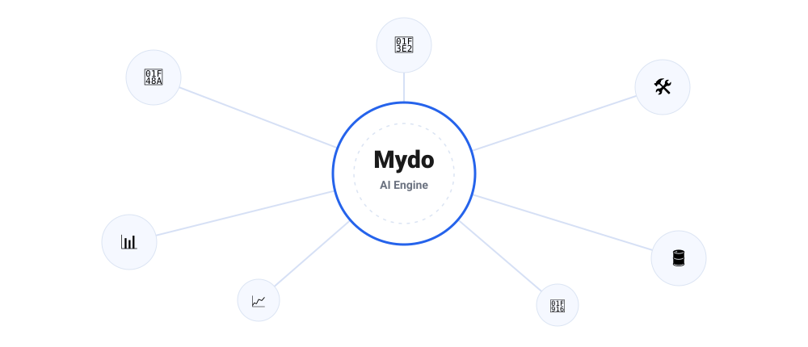
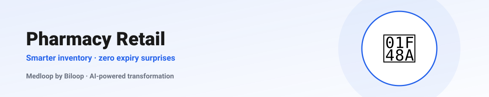
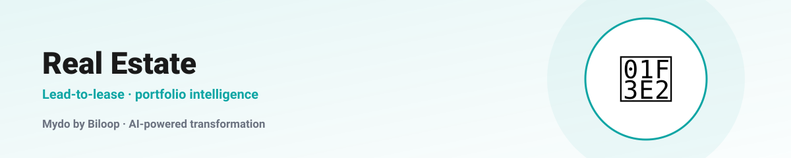
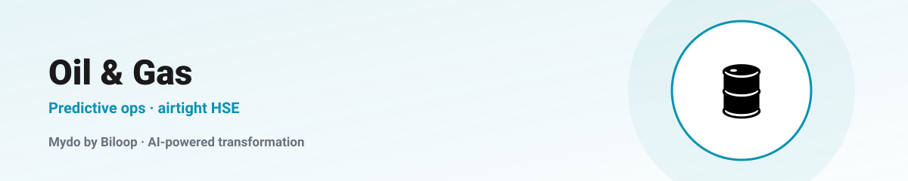
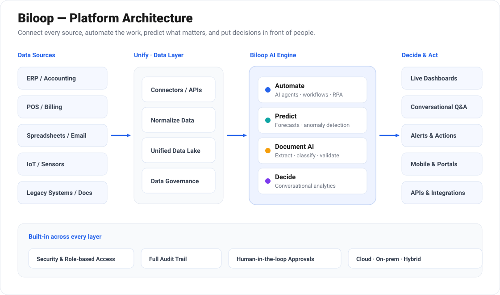

Pharmacy Retail · Medloop
From Counting Pills to Predicting Demand
Trading gut-feel reordering and shelf-edge expiry surprises for AI that sees demand coming.
Practical, no-hype deep-dives on what Biloop changes inside five very different industries — and the numbers that follow.

Trading gut-feel reordering and shelf-edge expiry surprises for AI that sees demand coming.

How document AI and continuous reconciliation make closing the books a non-event.
Speed wins deals and data wins portfolios. AI quietly fixes both ends of the business.

Renewals, scheduling and spare parts are where AMC margin quietly bleeds. AI stops the leak.

The data to prevent the next failure is already in your historian. Here's how AI uses it — safely.

Every article above runs on the same foundation: connect every source into one trusted data layer, let the AI engine automate and predict, and push decisions out to the people and systems that act on them.
